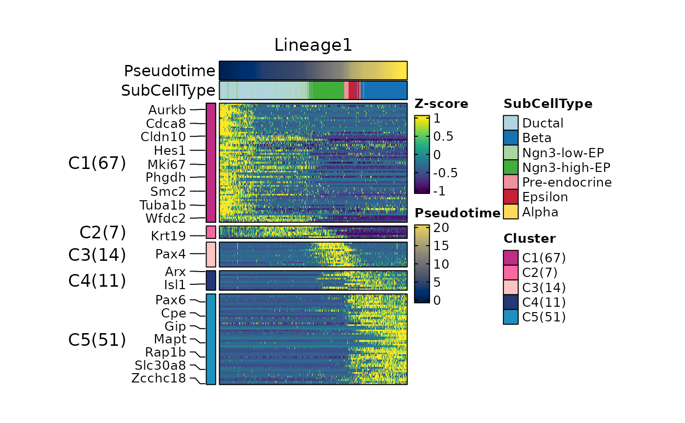
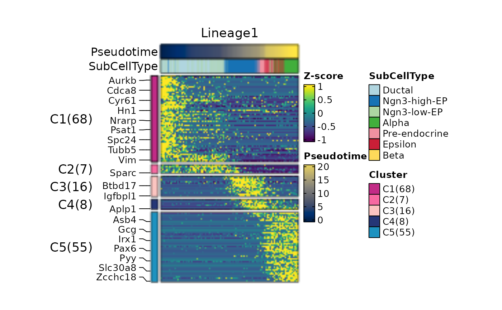
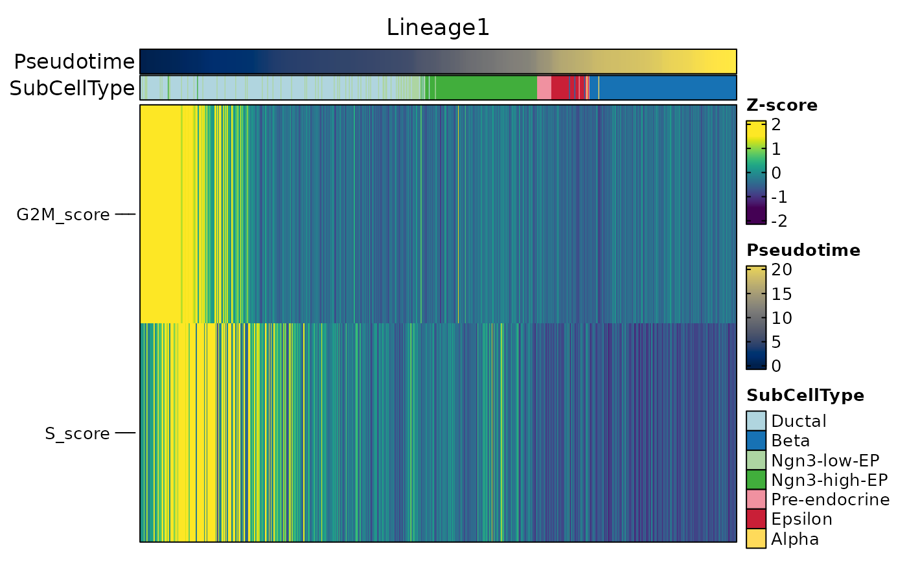
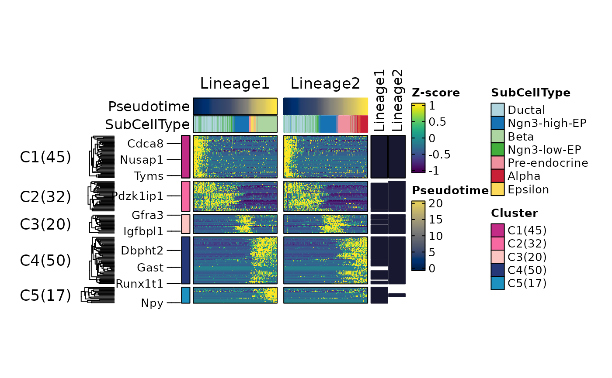

Heatmap plot for dynamic features along lineages
Usage
DynamicHeatmap(
srt,
lineages,
features = NULL,
use_fitted = FALSE,
border = TRUE,
heatmap_border = NULL,
cell_annotation_border = NULL,
feature_annotation_border = NULL,
heatmap_border_palcolor = "black",
cell_annotation_border_palcolor = "black",
feature_annotation_border_palcolor = "black",
heatmap_border_size = 1,
cell_annotation_border_size = 1,
feature_annotation_border_size = 1,
flip = FALSE,
min_expcells = 20,
r.sq = 0.2,
dev.expl = 0.2,
padjust = 0.05,
num_intersections = NULL,
cell_density = 1,
cell_bins = 100,
order_by = c("peaktime", "valleytime"),
layer = "counts",
assay = NULL,
exp_method = c("zscore", "raw", "fc", "log2fc", "log1p"),
exp_legend_title = NULL,
limits = NULL,
lib_normalize = identical(layer, "counts"),
libsize = NULL,
family = NULL,
suffix = lineages,
n_candidates = 1000,
minfreq = 5,
fit_method = c("gam", "pretsa"),
knot = 0,
max_knot_allowed = 10,
padjust_method = "fdr",
cluster_features_by = NULL,
cluster_rows = FALSE,
cluster_row_slices = FALSE,
cluster_columns = FALSE,
cluster_column_slices = FALSE,
show_row_names = FALSE,
show_column_names = FALSE,
row_names_side = ifelse(flip, "left", "right"),
column_names_side = ifelse(flip, "bottom", "top"),
row_names_rot = 0,
column_names_rot = 90,
row_title = NULL,
column_title = NULL,
row_title_side = "left",
column_title_side = "top",
row_title_rot = 0,
column_title_rot = ifelse(flip, 90, 0),
feature_split = NULL,
feature_split_by = NULL,
n_split = NULL,
split_order = NULL,
split_method = c("mfuzz", "kmeans", "kmeans-peaktime", "hclust", "hclust-peaktime"),
decreasing = FALSE,
fuzzification = NULL,
anno_terms = FALSE,
anno_keys = FALSE,
anno_features = FALSE,
terms_width = grid::unit(4, "in"),
terms_stat_width = grid::unit(1.35, "in"),
terms_fontsize = 8,
terms_stat = "none",
terms_stat_digits = 2,
terms_stat_label = "value",
terms_stat_axis = FALSE,
terms_stat_background_palcolor = NULL,
terms_stat_border = NULL,
terms_stat_border_palcolor = NULL,
terms_stat_border_size = NULL,
terms_stat_label_palcolor = NULL,
terms_group_background = FALSE,
terms_background_palcolor = "grey98",
terms_background_alpha = 1,
terms_border = TRUE,
terms_border_palcolor = "black",
terms_border_size = 0.8,
terms_text_palcolor = NULL,
terms_bar_palcolor = NULL,
keys_width = grid::unit(2, "in"),
keys_fontsize = c(6, 10),
features_width = grid::unit(2, "in"),
features_fontsize = c(6, 10),
IDtype = "symbol",
species = "Homo_sapiens",
db_update = FALSE,
db_version = "latest",
db_combine = FALSE,
convert_species = FALSE,
Ensembl_version = NULL,
mirror = NULL,
db = "GO_BP",
TERM2GENE = NULL,
TERM2NAME = NULL,
minGSSize = 10,
maxGSSize = 500,
GO_simplify = FALSE,
GO_simplify_cutoff = "p.adjust < 0.05",
simplify_method = "Wang",
simplify_similarityCutoff = 0.7,
pvalueCutoff = NULL,
padjustCutoff = 0.05,
topTerm = 5,
show_termid = FALSE,
topWord = 20,
words_excluded = NULL,
nlabel = 20,
features_label = NULL,
label_size = 10,
label_color = "black",
pseudotime_label = NULL,
pseudotime_label_color = "black",
pseudotime_label_linetype = 2,
pseudotime_label_linewidth = 3,
heatmap_palette = "viridis",
heatmap_palcolor = NULL,
pseudotime_palette = "cividis",
pseudotime_palcolor = NULL,
feature_split_palette = "simspec",
feature_split_palcolor = NULL,
cell_annotation = NULL,
cell_annotation_palette = "Chinese",
cell_annotation_palcolor = NULL,
cell_annotation_params = if (flip) {
list(width = grid::unit(5, "mm"))
} else {
list(height = grid::unit(5, "mm"))
},
feature_annotation = NULL,
feature_annotation_palette = "Dark2",
feature_annotation_palcolor = NULL,
feature_annotation_params = if (flip) {
list(height = grid::unit(5, "mm"))
} else
{
list(width = grid::unit(5, "mm"))
},
separate_annotation = NULL,
separate_annotation_palette = "Chinese",
separate_annotation_palcolor = NULL,
separate_annotation_params = if (flip) {
list(width = grid::unit(10, "mm"))
}
else {
list(height = grid::unit(10, "mm"))
},
reverse_ht = NULL,
use_raster = NULL,
raster_device = "png",
raster_by_magick = TRUE,
height = NULL,
width = NULL,
units = "inch",
cores = 1,
verbose = TRUE,
seed = 11,
legend.position = "right",
ht_params = list(),
...
)Arguments
- srt
A
Seuratobject.- lineages
Lineage names for which dynamic features should be calculated.
- features
Features to plot. By default, this parameter is set to NULL, and the dynamic features will be determined by the parameters
min_expcells,r.sq,dev.expl,padjustandnum_intersections.- use_fitted
Whether to use fitted values.
- border
Draw borders. Kept for compatibility; more specific
*_borderarguments inherit this whenNULL.- heatmap_border, cell_annotation_border, feature_annotation_border
Borders for the heatmap body and annotations.
NULLinheritsborder.- heatmap_border_palcolor, cell_annotation_border_palcolor, feature_annotation_border_palcolor
Border colors when the matching border argument is
TRUE.- heatmap_border_size, cell_annotation_border_size, feature_annotation_border_size
Border line widths when the matching border argument is
TRUE.- flip
Flip rows and columns.
- min_expcells
The minimum number of expected cells.
- r.sq
The R-squared threshold.
- dev.expl
The deviance explained threshold.
- padjust
The p-value adjustment threshold.
- num_intersections
This parameter is a numeric vector used to determine the number of intersections among lineages. It helps in selecting which dynamic features will be used. By default, when this parameter is set to
NULL, all dynamic features that pass the specified threshold will be used for each lineage.- cell_density
The cell density within each cell bin. By default, this parameter is set to
1, which means that all cells will be included within each cell bin.- cell_bins
The number of cell bins.
- order_by
The order of the heatmap.
- layer
Assay layer to use.
- assay
Assay to use.
NULLuses the default assay.- exp_method
Expression transform:
"zscore","raw","fc","log2fc", or"log1p".- exp_legend_title
Legend title for expression.
- limits
Color-scale limits (length 2).
- lib_normalize, libsize
Library-size normalization and per-cell library sizes.
- family
A character or character vector specifying the family of distributions to use for the GAM. If family is set to NULL, the appropriate family will be automatically determined based on the data. If length(family) is 1, the same family will be used for all features. Otherwise, family must have the same length as features.
- suffix
Suffix to append to the output layer names for each lineage. Default is the lineage names.
- n_candidates
A number of candidate features to select when features is
NULL.- minfreq
Minimum frequency threshold for candidate features. Features with a frequency less than minfreq will be excluded.
- fit_method
The method used for fitting features. Either
"gam"(generalized additive models) or"pretsa"(Pattern recognition in Temporal and Spatial Analyses).- knot
For
fit_method = "pretsa": B-spline knots.0or"auto".- max_knot_allowed
For
fit_method = "pretsa"whenknot = "auto": max knots.- padjust_method
The method used for p-value adjustment.
- cluster_features_by
Which lineage to use when clustering features. By default, this parameter is set to
NULL, which means that all lineages will be used.- cluster_rows, cluster_columns, cluster_row_slices, cluster_column_slices
Heatmap clustering.
- show_row_names
Whether to draw row/column names for the heatmap body.
- show_column_names
Whether to draw row/column names for the heatmap body.
- row_names_side, column_names_side, row_names_rot, column_names_rot
Name placement.
- row_title, column_title, row_title_side, column_title_side, row_title_rot, column_title_rot
Slice titles.
- feature_split, feature_split_by, n_split, split_order, split_method, decreasing
Feature splitting.
split_methodis"kmeans","hclust", or"mfuzz".- fuzzification
Mfuzz fuzzification coefficient.
- anno_terms, anno_keys, anno_features
Enrichment annotations.
- terms_width, terms_stat_width, terms_fontsize
Term annotation size.
- terms_stat
Enrichment statistic for term bars:
"none","score"(-log10of the active p-value), or an enrichment column such as"p.adjust".- terms_stat_digits, terms_stat_label, terms_stat_axis
Statistic labels (
"none","value","significance","both") and shared axis.- terms_stat_background_palcolor, terms_stat_border, terms_stat_border_palcolor, terms_stat_border_size, terms_stat_label_palcolor
Statistic-panel appearance.
NULLinherits the matchingterms_*setting.- terms_group_background, terms_background_palcolor, terms_background_alpha, terms_border, terms_border_palcolor, terms_border_size, terms_text_palcolor, terms_bar_palcolor
Term-block appearance.
terms_text_palcolor = NULLmaps text to enrichment significance;terms_bar_palcolor = NULLmatches bar color to term text.- keys_width, keys_fontsize, features_width, features_fontsize
Key and feature annotations.
- IDtype, species, db_combine, mirror, db, TERM2GENE, TERM2NAME, minGSSize, maxGSSize
Gene-set database (see PrepareDB).
- db_update
Force a refresh.
FALSEloads the cache when available.- db_version
Database version to retrieve.
- convert_species
Use a species-converted database when the annotation is missing for
species.- Ensembl_version
Ensembl version.
NULLuses the latest.- GO_simplify, GO_simplify_cutoff, simplify_method, simplify_similarityCutoff
GO simplification.
- pvalueCutoff, padjustCutoff, topTerm, show_termid, topWord, words_excluded
Enrichment filters.
- nlabel, features_label, label_size, label_color
Feature labels.
- pseudotime_label
The pseudotime label.
- pseudotime_label_color
The pseudotime label color.
- pseudotime_label_linetype
The pseudotime label line type.
- pseudotime_label_linewidth
The pseudotime label line width.
- heatmap_palette
Palette used for CNV heatmap values.
- heatmap_palcolor
Palette used for CNV heatmap values.
- pseudotime_palette
The color palette to use for pseudotime.
- pseudotime_palcolor
The colors to use for the pseudotime in the heatmap.
- feature_split_palette
Split colors.
- feature_split_palcolor
Custom colors for feature-split annotation labels.
- cell_annotation, cell_annotation_palette, cell_annotation_palcolor, cell_annotation_params
Cell annotations. Palette length should match
cell_annotation.- feature_annotation, feature_annotation_palette, feature_annotation_palcolor, feature_annotation_params
Feature annotations. Palette length should match
feature_annotation.- separate_annotation
Names of the annotations to be displayed in separate annotation blocks. Each name should match a column name in the metadata of the
Seuratobject.- separate_annotation_palette
The color palette to use for separate annotations.
- separate_annotation_palcolor
The colors to use for each level of the separate annotations.
- separate_annotation_params
Other parameters to ComplexHeatmap::HeatmapAnnotation when creating a separate annotation blocks.
- reverse_ht
Whether to reverse the heatmap.
- use_raster, raster_device, raster_by_magick
Raster device (
NULLchooses automatically).- width, height, units
Heatmap size.
NULLsizes from matrix dimensions.- cores
The number of worker processes to use for parallelization. Default is
1.- verbose
Whether to print the message. Default is
TRUE.- seed
Optional integer seed. When supplied, every input receives a deterministic independent L'Ecuyer-CMRG random-number stream, making results reproducible across worker counts and scheduling order. The caller's random number state is restored when the call finishes.
- legend.position
Legend side (
"right","left","top","bottom"). Gap to the heatmap grows automatically when long row names are on the right.- ht_params
Extra arguments passed to ComplexHeatmap::Heatmap, overriding defaults.
- ...
Additional arguments passed to helper functions.
Examples
data(pancreas_sub)
pancreas_sub <- RunStandardWorkflow(pancreas_sub)
#> ℹ [2026-09-03 08:03:24] Start standard processing workflow...
#> ℹ [2026-09-03 08:03:24] Checking a list of <Seurat>...
#> ! [2026-09-03 08:03:24] Data 1/1 of the `srt_list` is "unknown"
#> ℹ [2026-09-03 08:03:24] Perform `NormalizeData()` with `normalization.method = 'LogNormalize'` on 1/1 of `srt_list`...
#> ℹ [2026-09-03 08:03:24] Perform `FindVariableFeatures()` on 1/1 of `srt_list`...
#> ℹ [2026-09-03 08:03:24] Use the separate HVF from `srt_list`
#> ℹ [2026-09-03 08:03:24] Number of available HVF: 2000
#> ℹ [2026-09-03 08:03:24] Finished check
#> ℹ [2026-09-03 08:03:24] Perform `ScaleData()`
#> ℹ [2026-09-03 08:03:24] Perform pca linear dimension reduction
#> ℹ [2026-09-03 08:03:24] Use stored estimated dimensions 1:23 for Standardpca
#> ℹ [2026-09-03 08:03:25] Perform `Seurat::FindClusters()` with `cluster_algorithm = 'louvain'` and `cluster_resolution = 0.6`
#> ℹ [2026-09-03 08:03:25] Reorder clusters...
#> ℹ [2026-09-03 08:03:25] Skip `log1p()` because `layer = data` is not "counts"
#> ℹ [2026-09-03 08:03:25] Perform umap nonlinear dimension reduction
#> ✔ [2026-09-03 08:03:32] Standard processing workflow completed
pancreas_sub <- RunSlingshot(
pancreas_sub,
group.by = "SubCellType",
reduction = "UMAP"
)
 pancreas_sub <- RunDynamicFeatures(
pancreas_sub,
lineages = c("Lineage1", "Lineage2"), ,
fit_method = "pretsa",
n_candidates = 200
)
#> ℹ [2026-09-03 08:03:34] Start find dynamic features
#> ℹ [2026-09-03 08:03:34] Data type is raw counts
#> ℹ [2026-09-03 08:03:35] Number of candidate features (union): 242
#> ℹ [2026-09-03 08:03:35] Data type is raw counts
#> ℹ [2026-09-03 08:03:35] Calculating dynamic features for "Lineage1"...
#> ℹ [2026-09-03 08:03:35] Calculating dynamic features for "Lineage2"...
#> ✔ [2026-09-03 08:03:35] Find dynamic features done
ht1 <- DynamicHeatmap(
pancreas_sub,
exp_legend_title = "Z-score",
lineages = "Lineage1",
n_split = 5,
split_method = "kmeans-peaktime",
cell_annotation = "SubCellType",
width = 2,
height = 3
)
#> ℹ [2026-09-03 08:03:35] [1] 154 features from Lineage1 passed the threshold (exp_ncells>[1] 20 & r.sq>[1] 0.2 & dev.expl>[1] 0.2 & padjust<[1] 0.05):
#> ℹ Gcg,Iapp,Pyy,Rbp4,Gast,Chgb,Lrpprc,Slc38a5,Ppy,Cck...
ht1$plot
pancreas_sub <- RunDynamicFeatures(
pancreas_sub,
lineages = c("Lineage1", "Lineage2"), ,
fit_method = "pretsa",
n_candidates = 200
)
#> ℹ [2026-09-03 08:03:34] Start find dynamic features
#> ℹ [2026-09-03 08:03:34] Data type is raw counts
#> ℹ [2026-09-03 08:03:35] Number of candidate features (union): 242
#> ℹ [2026-09-03 08:03:35] Data type is raw counts
#> ℹ [2026-09-03 08:03:35] Calculating dynamic features for "Lineage1"...
#> ℹ [2026-09-03 08:03:35] Calculating dynamic features for "Lineage2"...
#> ✔ [2026-09-03 08:03:35] Find dynamic features done
ht1 <- DynamicHeatmap(
pancreas_sub,
exp_legend_title = "Z-score",
lineages = "Lineage1",
n_split = 5,
split_method = "kmeans-peaktime",
cell_annotation = "SubCellType",
width = 2,
height = 3
)
#> ℹ [2026-09-03 08:03:35] [1] 154 features from Lineage1 passed the threshold (exp_ncells>[1] 20 & r.sq>[1] 0.2 & dev.expl>[1] 0.2 & padjust<[1] 0.05):
#> ℹ Gcg,Iapp,Pyy,Rbp4,Gast,Chgb,Lrpprc,Slc38a5,Ppy,Cck...
ht1$plot

thisplot::panel_fix(ht1$plot, raster = TRUE, dpi = 50)

ht2 <- DynamicHeatmap(
pancreas_sub,
exp_legend_title = "Z-score",
lineages = "Lineage1",
features = c(
"Sox9",
"Neurod2",
"Isl1",
"Rbp4",
"Pyy",
"S_score",
"G2M_score"
),
cell_annotation = "SubCellType"
)
#> ℹ [2026-09-03 08:03:38] Start find dynamic features
#> ℹ [2026-09-03 08:03:38] Data type is raw counts
#> ℹ [2026-09-03 08:03:38] Number of candidate features (union): 2
#> ℹ [2026-09-03 08:03:39] Data type is raw counts
#> ! [2026-09-03 08:03:39] Negative values detected
#> ! [2026-09-03 08:03:39] Negative values detected
#> ℹ [2026-09-03 08:03:39] Calculating dynamic features for "Lineage1"...
#> ℹ [2026-09-03 08:03:39] Using 1 core
#> ⠙ [2026-09-03 08:03:39] Running for S_score [1/2] ■■■■■ 50% | ETA: 0s
#> ✔ [2026-09-03 08:03:39] Completed 2 tasks in 91ms
#>
#> ℹ [2026-09-03 08:03:39] Building results
#> ✔ [2026-09-03 08:03:39] Find dynamic features done
#> ℹ [2026-09-03 08:03:39] Some features were missing in at least one lineage:
#> ℹ Isl1,Neurod2,Pyy,Rbp4,Sox9...
ht2$plot

ht3 <- DynamicHeatmap(
pancreas_sub,
exp_legend_title = "Z-score",
lineages = c("Lineage1", "Lineage2"),
n_split = 5,
nlabel = 10,
split_method = "kmeans",
cluster_rows = TRUE,
cell_annotation = "SubCellType",
width = 1,
height = 2
)
#> ℹ [2026-09-03 08:03:39] [1] 176 features from Lineage1,Lineage2 passed the threshold (exp_ncells>[1] 20 & r.sq>[1] 0.2 & dev.expl>[1] 0.2 & padjust<[1] 0.05):
#> ℹ Gcg,Iapp,Pyy,Rbp4,Gast,Chgb,Lrpprc,Slc38a5,Ppy,Cck...
ht3$plot

ht4 <- DynamicHeatmap(
pancreas_sub,
exp_legend_title = "Z-score",
lineages = c("Lineage1", "Lineage2"),
reverse_ht = "Lineage1",
cell_annotation = "SubCellType",
n_split = 3,
nlabel = 10,
split_method = "mfuzz",
species = "Mus_musculus",
db = "GO_BP",
anno_terms = TRUE,
width = 1,
height = 2
)
#> ℹ [2026-09-03 08:03:42] [1] 176 features from Lineage1,Lineage2 passed the threshold (exp_ncells>[1] 20 & r.sq>[1] 0.2 & dev.expl>[1] 0.2 & padjust<[1] 0.05):
#> ℹ Gcg,Iapp,Pyy,Rbp4,Gast,Chgb,Lrpprc,Slc38a5,Ppy,Cck...
#> ℹ [2026-09-03 08:03:43] Start Enrichment analysis
#> ℹ [2026-09-03 08:03:43] Species: "Mus_musculus"
#> ℹ [2026-09-03 08:03:43] Loading cached: GO_BP version: 3.23.0 nterm:14957 created: 2026-09-03 08:01:19
#> ℹ [2026-09-03 08:03:44] Permform enrichment...
#> ℹ [2026-09-03 08:03:45] Using 1 core
#> ⠙ [2026-09-03 08:03:45] Running for 1 [1/3] ■■■ 33% | ETA: 3s
#> ⠹ [2026-09-03 08:03:45] Running for 2 [2/3] ■■■■■■ 67% | ETA: 1s
#> ✔ [2026-09-03 08:03:45] Completed 3 tasks in 4.4s
#>
#> ℹ [2026-09-03 08:03:45] Building results
#> ✔ [2026-09-03 08:03:50] Enrichment analysis done
ht5 <- DynamicHeatmap(
pancreas_sub,
exp_legend_title = "Z-score",
lineages = "Lineage1",
cell_annotation = "SubCellType",
n_split = 2,
split_method = "mfuzz",
species = "Mus_musculus",
db = "GO_BP",
cores = 2,
nlabel = 10,
anno_terms = TRUE,
anno_keys = TRUE,
anno_features = TRUE,
width = 1,
height = 2,
terms_width = grid::unit(1, "in"),
terms_fontsize = 6,
keys_width = grid::unit(0.5, "in"),
keys_fontsize = c(3, 6),
features_width = grid::unit(0.5, "in"),
features_fontsize = c(3, 6)
)
#> ℹ [2026-09-03 08:03:51] [1] 154 features from Lineage1 passed the threshold (exp_ncells>[1] 20 & r.sq>[1] 0.2 & dev.expl>[1] 0.2 & padjust<[1] 0.05):
#> ℹ Gcg,Iapp,Pyy,Rbp4,Gast,Chgb,Lrpprc,Slc38a5,Ppy,Cck...
#> ℹ [2026-09-03 08:03:52] Start Enrichment analysis
#> ℹ [2026-09-03 08:03:52] Species: "Mus_musculus"
#> ℹ [2026-09-03 08:03:52] Loading cached: GO_BP version: 3.23.0 nterm:14957 created: 2026-09-03 08:01:19
#> ℹ [2026-09-03 08:03:53] Permform enrichment...
#> ℹ [2026-09-03 08:03:54] Using 2 cores
#> ⠙ [2026-09-03 08:03:54] Running for 2 [1/2] ■■■■■ 50% | ETA: 24s
#> ✔ [2026-09-03 08:03:54] Completed 2 tasks in 24.2s
#>
#> ℹ [2026-09-03 08:03:54] Building results
#> ✔ [2026-09-03 08:04:18] Enrichment analysis done
pancreas_sub <- AnnotateFeatures(
pancreas_sub,
species = "Mus_musculus",
db = c("CSPA", "TF")
)
#> ℹ [2026-09-03 08:04:33] Species: "Mus_musculus"
#> ℹ [2026-09-03 08:04:33] Loading cached: TF version: AnimalTFDB4 nterm:2 created: 2026-09-03 07:47:01
#> ℹ [2026-09-03 08:04:34] Preparing database: CSPA
ht6 <- DynamicHeatmap(
pancreas_sub,
exp_legend_title = "Z-score",
lineages = c("Lineage1", "Lineage2"),
reverse_ht = "Lineage1",
use_fitted = TRUE,
n_split = 3,
nlabel = 10,
split_method = "mfuzz",
heatmap_palette = "viridis",
cell_annotation = c(
"SubCellType", "Phase", "G2M_score"
),
cell_annotation_palette = c(
"Chinese", "simspec", "Purples"
),
separate_annotation = list(
"SubCellType", c("Arxes1", "Ncoa2")
),
separate_annotation_palette = c(
"Chinese", "Set1"
),
separate_annotation_params = list(
height = grid::unit(10, "mm")
),
feature_annotation = c("TF", "CSPA"),
feature_annotation_palcolor = list(
c("gold", "steelblue"),
c("forestgreen")
),
pseudotime_label = 25,
pseudotime_label_color = "red",
width = 1,
height = 2
)
#> ℹ [2026-09-03 08:04:35] [1] 176 features from Lineage1,Lineage2 passed the threshold (exp_ncells>[1] 20 & r.sq>[1] 0.2 & dev.expl>[1] 0.2 & padjust<[1] 0.05):
#> ℹ Gcg,Iapp,Pyy,Rbp4,Gast,Chgb,Lrpprc,Slc38a5,Ppy,Cck...
#> ℹ [2026-09-03 08:04:36] Start find dynamic features
#> ℹ [2026-09-03 08:04:36] Data type is raw counts
#> ℹ [2026-09-03 08:04:36] Number of candidate features (union): 2
#> ℹ [2026-09-03 08:04:36] Data type is raw counts
#> ℹ [2026-09-03 08:04:36] Calculating dynamic features for "Lineage1"...
#> ℹ [2026-09-03 08:04:37] Using 1 core
#> ⠙ [2026-09-03 08:04:37] Running for Arxes1 [1/2] ■■■■■ 50% | ETA: 0s
#> ✔ [2026-09-03 08:04:37] Completed 2 tasks in 120ms
#>
#> ℹ [2026-09-03 08:04:37] Building results
#> ✔ [2026-09-03 08:04:37] Find dynamic features done
#> ℹ [2026-09-03 08:04:37] Start find dynamic features
#> ℹ [2026-09-03 08:04:38] Data type is raw counts
#> ℹ [2026-09-03 08:04:38] Number of candidate features (union): 2
#> ℹ [2026-09-03 08:04:38] Data type is raw counts
#> ℹ [2026-09-03 08:04:38] Calculating dynamic features for "Lineage2"...
#> ℹ [2026-09-03 08:04:38] Using 1 core
#> ℹ [2026-09-03 08:04:38] Building results
#> ✔ [2026-09-03 08:04:38] Find dynamic features done
#> Picking joint bandwidth of 19.9
#> Picking joint bandwidth of 17.5
#> Picking joint bandwidth of 19.9
#> Picking joint bandwidth of 17.5
ht7 <- DynamicHeatmap(
pancreas_sub,
exp_legend_title = "Z-score",
lineages = c("Lineage1", "Lineage2"),
reverse_ht = "Lineage1",
use_fitted = TRUE,
n_split = 3,
nlabel = 10,
split_method = "mfuzz",
heatmap_palette = "viridis",
cell_annotation = c(
"SubCellType", "Phase", "G2M_score"
),
cell_annotation_palette = c(
"Chinese", "simspec", "Purples"
),
separate_annotation = list(
"SubCellType", c("Arxes1", "Ncoa2")
),
separate_annotation_palette = c("Chinese", "Set1"),
separate_annotation_params = list(width = grid::unit(10, "mm")),
feature_annotation = c("TF", "CSPA"),
feature_annotation_palcolor = list(
c("gold", "steelblue"),
c("forestgreen")
),
pseudotime_label = 25,
pseudotime_label_color = "red",
flip = TRUE,
column_title_rot = 90,
width = 2,
height = 1
)
#> ℹ [2026-09-03 08:04:42] [1] 176 features from Lineage1,Lineage2 passed the threshold (exp_ncells>[1] 20 & r.sq>[1] 0.2 & dev.expl>[1] 0.2 & padjust<[1] 0.05):
#> ℹ Gcg,Iapp,Pyy,Rbp4,Gast,Chgb,Lrpprc,Slc38a5,Ppy,Cck...
#> ℹ [2026-09-03 08:04:42] Start find dynamic features
#> ℹ [2026-09-03 08:04:42] Data type is raw counts
#> ℹ [2026-09-03 08:04:43] Number of candidate features (union): 2
#> ℹ [2026-09-03 08:04:43] Data type is raw counts
#> ℹ [2026-09-03 08:04:43] Calculating dynamic features for "Lineage1"...
#> ℹ [2026-09-03 08:04:43] Using 1 core
#> ⠙ [2026-09-03 08:04:43] Running for Arxes1 [1/2] ■■■■■ 50% | ETA: 0s
#> ✔ [2026-09-03 08:04:43] Completed 2 tasks in 115ms
#>
#> ℹ [2026-09-03 08:04:43] Building results
#> ✔ [2026-09-03 08:04:43] Find dynamic features done
#> ℹ [2026-09-03 08:04:43] Start find dynamic features
#> ℹ [2026-09-03 08:04:44] Data type is raw counts
#> ℹ [2026-09-03 08:04:44] Number of candidate features (union): 2
#> ℹ [2026-09-03 08:04:44] Data type is raw counts
#> ℹ [2026-09-03 08:04:44] Calculating dynamic features for "Lineage2"...
#> ℹ [2026-09-03 08:04:44] Using 1 core
#> ℹ [2026-09-03 08:04:44] Building results
#> ✔ [2026-09-03 08:04:44] Find dynamic features done
#> Picking joint bandwidth of 19.9
#> Picking joint bandwidth of 17.5
#> Picking joint bandwidth of 19.9
#> Picking joint bandwidth of 17.5